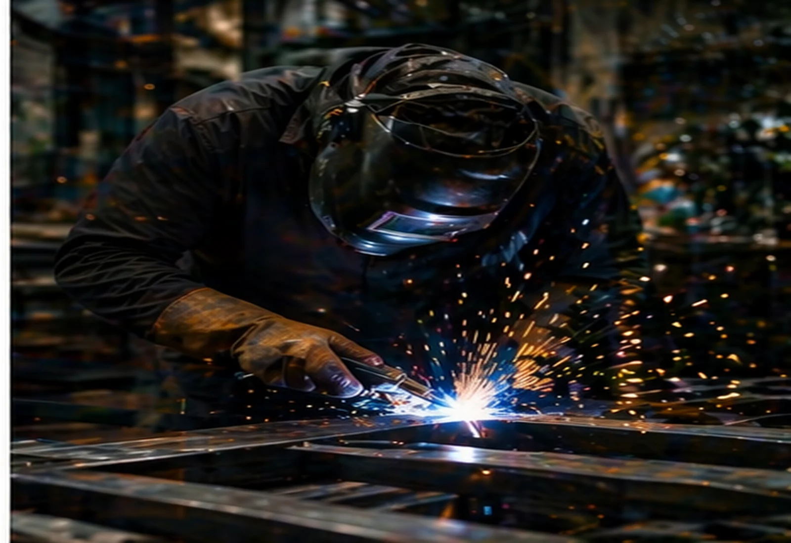
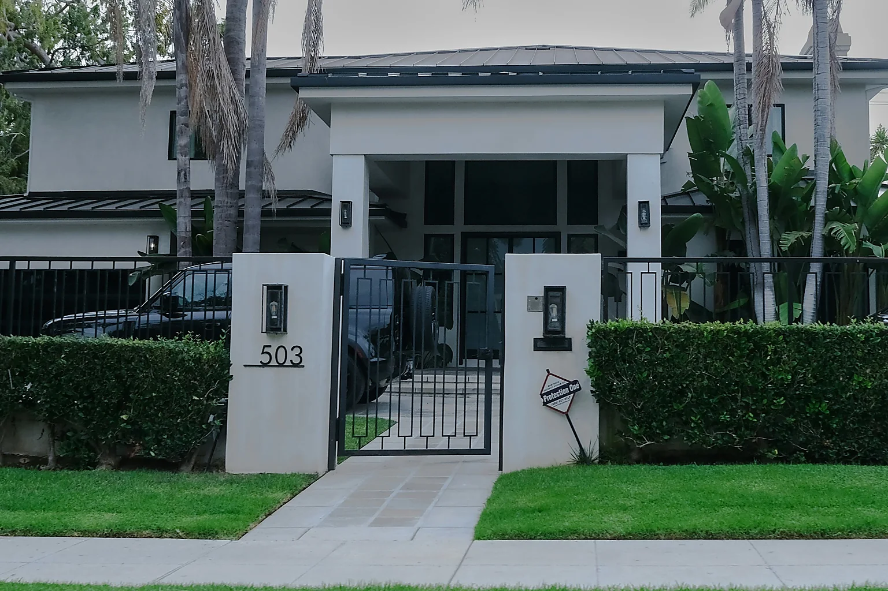
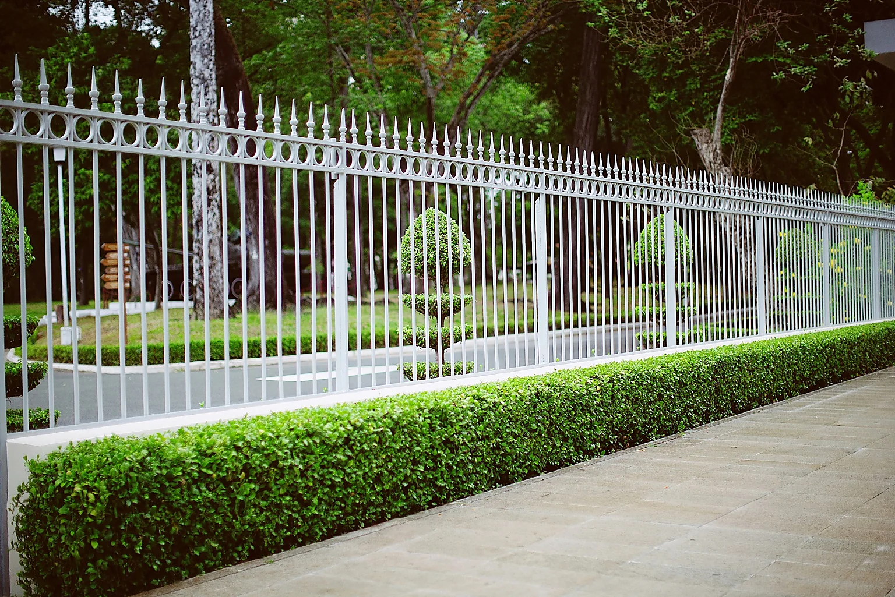
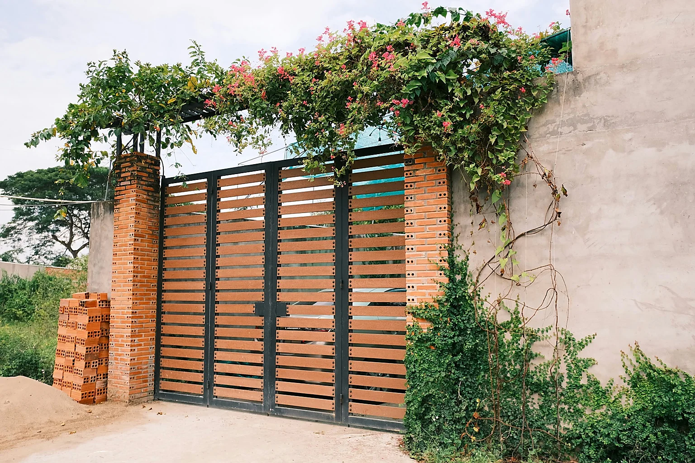
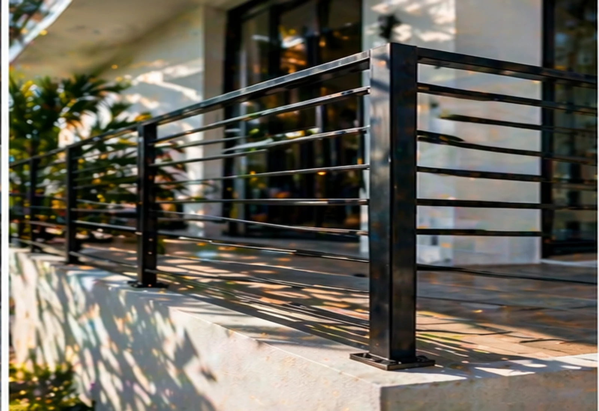

La primera impresión. Debe transmitir Miami + premium + modernidad en 2 segundos.
Imagen grande del hero NUEVA
IMG_9665.webp
Por qué: Casa moderna blanca de Miami con palmeras, portón negro con barras verticales y número 503 visible. Transmite credibilidad ("proyecto real entregado"), ubicación ("esto es Miami") y calidad ("trabajo refinado"). Reemplaza a IMG_9637 que aunque se veía bien parecía render 3D o stock.
Imagen pequeña de acento SE MANTIENE
IMG_9647.webp
Por qué: Técnico de espaldas con uniforme Milos Pro visible trabajando. Perfecta porque muestra marca + acción + realidad del taller. Complementa al hero con "humanidad" después del portón de ensueño.
Cada tarjeta comunica un servicio específico. La foto debe hacer entender el servicio sin leer el título.
Puertas automáticas NUEVA
IMG_9671.webp
Por qué: Vista amplia de casa moderna con garage/portón industrial blanco y negro. Comunica "residencia moderna Miami" + "automatización integrada a arquitectura". Libera a IMG_9637 que ahora se repetía en hero y servicios.
Cercas y rejas metálicas NUEVA
IMG_9669.webp
Por qué: Cerca blanca alta con puntas ornamentales + jardín. Muestra estilo clásico/tradicional que es la otra mitad del mercado residencial Miami (no solo el black modern). Reemplaza IMG_9640 que queda mejor en otro slot.
Soldadura a medida NUEVA
IMG_9661.webp
Por qué: Portón con diseño geométrico recortado artísticamente. Es la foto PERFECTA para "soldadura a medida" porque grita "personalización" y "piezas únicas". Reemplaza a IMG_9641 (escalera) que se mueve a Instagram.
Mantenimiento y reparación SE MANTIENE
IMG_9639.webp
Por qué: Técnico reparando motor expuesto de portón. Imagen ideal para "servicio técnico" porque muestra expertise + interior mecánico + manos a la obra. No hay que cambiarla.
Intercomunicadores y seguridad SE MANTIENE
IMG_9638.webp
Por qué: Videoportero plateado con keypad. Matches con el servicio de forma literal y clara. Sin cambios.
Sin fotos — las 4 tarjetas de diferenciadores son solo texto con números grandes. Sin cambios.
Debe mostrar profesionalismo del taller y reforzar "sin subcontratistas".
Imagen del Proceso REUBICADA
IMG_9650.webp
Por qué cambiarla: Antes usábamos IMG_9647 aquí, pero esa la movimos al hero (imagen de acento). Esta foto (IMG_9650) muestra el taller completo con el soldador trabajando y la marca Milos Pro visible en la espalda. Refuerza "taller propio" y cumple la misma función.
Aquí podemos meter variedad. El objetivo es que se vea volumen de trabajo y diferentes tipos de proyectos.
IMG_9641 REUBICADA
Escalera de caracol vista lateral
IMG_9651 SE MANTIENE
Escalera de caracol otro ángulo
IMG_9637 REUBICADA
Portón negro sunset (antes hero)
IMG_9663 NUEVA
Portón con patrón de círculos
IMG_9640 REUBICADA
Balcón con vista a Miami
IMG_9644 NUEVA
Balcón con reja vertical moderna
Lógica del grid: mezclo proyectos residenciales terminados (portones, balcones) con trabajos artísticos (escaleras, diseños recortados). Da la sensación de volumen y variedad, que es lo que un visitante espera ver en un feed de Instagram.
El fondo del CTA final lleva overlay oscuro. Debe ser una imagen con textura dramática.
Fondo del CTA SE MANTIENE
IMG_9645.webp
Por qué: Soldadura con chispas, oscura y con puntos de luz. Perfecta para fondo con overlay porque las chispas brillan a través del degradado navy/teal. Sin cambios.
❌ Fotos que descarto (y por qué)

9653 · Madera rústica

9664 · Reja europea + perro

9662 · Casa Ibiza

9670 · Portón rústico

9652 · Casa industrial
Razón: Estas 5 fotos, aunque son válidas, rompen la identidad visual "Miami contemporáneo" que construimos. Las rústicas/europeas son estéticamente bellas pero confunden al visitante sobre qué tipo de trabajo hace Milos (que es alto gama residencial y comercial moderno). Si Milos quiere, las puede subir a Instagram — ahí sí aportan variedad sin contaminar el mensaje del sitio. IMG_9652 queda descartada porque la composición muy lejana le resta impacto en el formato del sitio.
📊 Resumen de cambios
6
Fotos nuevas integradas
3
Fotos reubicadas
4
Fotos que se mantienen
5
Fotos descartadas
Resultado: Cero repeticiones en el sitio. Cada slot tiene una foto específica, coherente con su sección, y pensada para comunicar algo concreto al visitante. La variedad visual aumenta sin perder coherencia de marca.